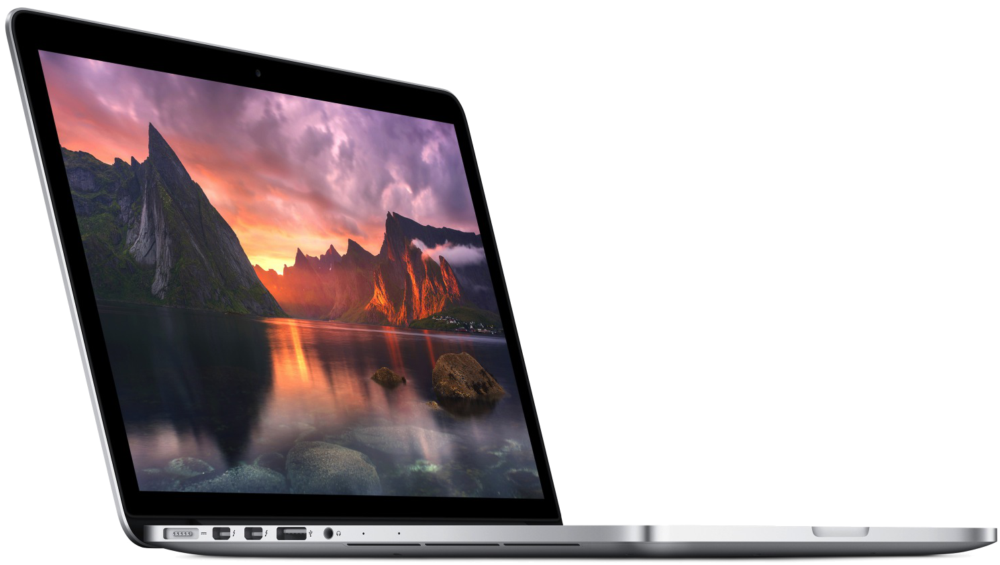

Новый MacBook Air M1 – это тонкий и легкий ноутбук, созданный для тех, кто нуждается в производительности и мобильности.
Процессор M1 позволяет запускать приложения быстрее и более эффективно, а благодаря технологии Wi-Fi 6 вы можете работать в любом месте.
Его легко использовать. Он невероятно мощный. Аккумулятор на грани фантастики. Mac открывает совершенно новые возможности для работы, игр и творчества. На нём предустановлено множество приложений, которыми можно пользоваться без предварительной настройки. Благодаря бесплатным регулярным обновлениям поддерживается актуальность и бесперебойная работа программного обеспечения. И если у вас уже есть iPhone, то всё окажется знакомым — как только вы включите свой Mac.
Отличный дисплей, быстрый, удобная клавиатура, вернули Magsafe, время автономно работы вообще какое-то невероятное. Одни сплошные плюсы. Дмитрий
Синий цвет, конечно, красивый, но настолько маркий, что просто ужас, наверное, поменял бы свой выбор цвета на классический, если бы знал глобальность проблемы, любое касание и палец,палец,палец.. Иван
Купите новый Macbook Air M1 прямо сейчас у оффициальных диллеров!